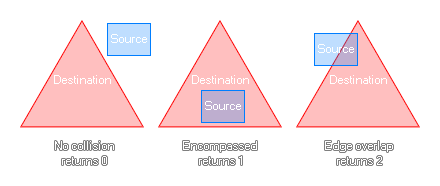

rectangle_in_triangle(sx1, sy1, sx2, sy2, dx1, dy1, dx2, dy2, dx3, dy3);
| Argument | Description |
|---|---|
| sx1 | The x coordinate of the left side of the source rectangle. |
| sy1 | The y coordinate of the top side of the source rectangle. |
| sx2 | The x coordinate of the right side of the source rectangle. |
| sy2 | The y coordinate of the bottom side of the source rectangle. |
| x1 | The x coordinate of the first side of the triangle to check. |
| y1 | The y coordinate of the first side of the triangle to check. |
| x2 | The x coordinate of the second side of the triangle to check. |
| y2 | The y coordinate of the second side of the triangle to check. |
| x3 | The x coordinate of the third side of the triangle to check. |
| y3 | The y coordinate of the third side of the triangle to check. |
Returns: Real.
This function will check a rectangular area that you define to
see if it is either not in collision, completely within the
destination bounds, or if it is simply touching, a defined
triangular area. If they are not touching at all the function will
return 0, if the source is completely within the destination it
will return 1, and if they are simply overlapping then it will
return 2. The image below illustrates this:

var inst = instance_nearest(x, y, obj_Player);
if instance_exists(inst)
{
var x1 = x + lengthdir_x(100, image_angle -
45);
var y1 = y + lengthdir_y(100, image_angle -
45);
var x2 = x + lengthdir_x(100, image_angle +
45);
var y2 = y + lengthdir_y(100, image_angle +
45);
if rectangle_in_triangle(inst.bbox_left,
inst.bbox_top, inst.bbox_right, inst.bbox_bottom, x, y, x1, y1, x2,
y2) == 1
{
can_see = true;
}
}
The above code uses the rectangle_in_triangle function as a "cone of vision" to check for an instance of "obj_player". If the full bounding box is within the given triangular area, it will set a variable to true.